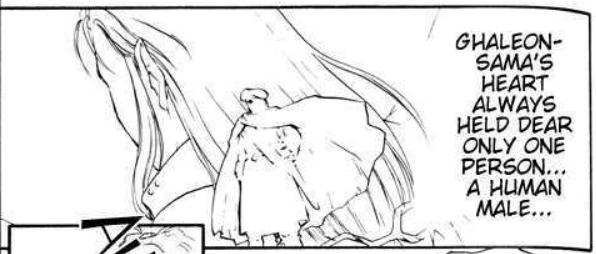

BLOG
Testing! Testing! Sorry~!
THE JOURNAL
Love, or Duty? - An Analysis of Ghaleon and Dyne
Ah, my favorite tried and true topic. I figured I may as well spill my guts with regards to my thoughts on these two.
Note: All translations of Vheen Hikuusen Monogatari and tankoubons can be sourced to sceneryrecalled. Younenki no Owari translations can be sourced to Deja Vu scanlations.

Dearness. What, exactly, is the expression of dearness?
In my interpretation, Ghaleon's heart holds dear only Dyne in an expression of love.
Dyne is the polar opposite of this, an open, loving person; the epitome of warmth. The two are like night and day; cat and dog. This is already a ship dynamic people love, honestly. But I'm here to go deeper into it.
See, Ghaleon and Dyne, according to the tankoubons, are a direct parallel of Latona and Zain, featured in VHM Chapter 3.
"It was then that I opened the notebook my mother had given me... she said she found it while cleaning out the closet."